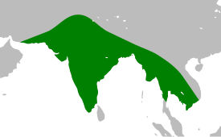

Материал из Википедии — свободной энциклопедии
Браминский сыч[1] (лат. Athene brama) — хищная птица рода сычей семейства совиных. Выделяют пять подвидов[2]. Одна из широко распространённых птиц Южной Азии, встречающаяся вблизи человеческого жилья (даже в больших городах). Ареал этого сыча весьма велик и охватывает не только Южную, но и часть Юго-Восточной Азии и Ирана, причём на всей этой территории браминский сыч многочислен и находится вне опасности.
Антропогенный фактор в целом благотворно сказывается на численности популяции этой птицы. Браминский сыч вблизи человеческого жилья находит лучшую кормовую базу, а также находится в относительной безопасности от естественных врагов.
Международное научное название
Ареал
Браминский сыч — типичный представитель рода Athene и, как и другие сычи, имеет относительно небольшие размеры по сравнению с остальными совами, достигает длины 19—21 см и массы 110—115. Длина крыла 13,4—17,1 см, хвоста 6,5—9,3 см[3]. Половой диморфизм не выражен. Лицевой диск кремово-бурого цвета с коричневыми концентрическими линиями и беловатым ободком. Макушка и бока головы землисто-коричневого цвета, испещрены белыми пятнами. Сильно изогнутые брови белого цвета, сходятся над клювом. Верхняя часть тела серовато-коричневая с разбросанными белыми пятнами. Маховые перья и кроющие перья крыла пёстрые или пятнисто-белые. Короткий хвост с узкими белыми полосками и без заметного белого кончика. Подбородок, горло и бока шеи беловато-бурого или кремового цвета. Грудь кремово-белая с короткими тёмно-серыми или коричневатыми полосами; широкий белый «воротник» проходит вокруг шеи. Остальная часть нижней части тела беловато-кремовая, с коричневой чешуйчатой каймой. Ноги длинные и тонкие, с короткими перьями у основания пальцев. Радужная оболочка золотисто-жёлтая; восковица зеленоватая; клюв зеленовато-роговой, более жёлтый на надклювье; пальцы желтовато-зелёные[4].
Вокализация представлена смесью резких визгов, болтовни и смешков В сезон размножения позывка представлена одиночным «chiurrr chiurrr chiurrr» , или перемежающимся с «cheevah cheevah cheevah...» , иногда слышны нестройные дуэты. Территориальный крик представлен жалобным двойным свистом «plew plew». Позывка вне брачного сезона звучит как «chevak-vak -cheevak-vak-vak-vak...», раздельно или перемежается с «chev-vuv-vuv-chev-vuv-vuv...» и «sev-sev-sev...», крик агрессии звучит как обычная позывка, но более высоким тоном; при опасности издаёт громкий визг[4].
Браминский сыч был описан в 1821 году нидерландским зоологом Конрадом Темминком под биноменом Strix brama. Видовое название brama дано в честь одного из верховных богов индуизма Брахмы (Брамы)[5][6].. В русскоязычной литературе иногда он упоминается как южноазиатский сыч[7].
Браминский сыч распространён во всей Южной Азии — практически на всей территории Индии, Пакистана, Бангладеш, Непала, — а также в западной части Юго-Восточной Азии. Его нет на Шри-Ланке, хотя в Индии он встречается на берегу Полкского пролива, в непосредственной близости от этого острова[8]. Ареал этого сыча также захватывает крайний юго-восток Ирана и прилегающие районы Афганистана. Общая площадь ареала составляет около 10 млн кв. км; по этой территории птица распространена довольно равномерно[9].
Типичный биотоп птицы — редколесье и заросшие кустарником пустоши. Браминский сыч предпочитает открытые места[7], в том числе и полупустыни и даже некоторые участки пустынь, однако желательно с наличием деревьев или скал, необходимых для гнездования. Участков густого леса избегает. В горах встречается на высоте до 1400 м над уровнем моря[8][неавторитетный источник]. Часто селится вблизи жилья человека, при этом в Индии и Пакистане считается синантропной птицей. Этот сыч — обычный обитатель парков и пустырей даже в таких крупных городах, как Дели или Калькутта. В населённых пунктах он встречается в большом количестве, чаще всего гнездится в дуплах деревьев, но также не избегает и построек, в том числе устраивая гнёзда в полостях стен больших зданий. Показательно, что пакистанские учёные из Фейсалабадского университета изучали сычей непосредственно на территории университетского городка[10]. Крик этого сыча — один из типичнейших ночных звуков сельской местности в Индии.
Выделяют пять подвидов
Основное различие между подвидами состоит в общем фоне окраски, птицы из южных частей ареала, как правило, намного темнее и менее пятнистые[3].
Несмотря на то, что браминский сыч — одна из наиболее часто встречаемых птиц Южной Азии, обитающая по соседству с людьми, до последнего времени его биология оставалась изученной достаточно слабо. Так, в 1983 году во втором издании «Путеводителя по птицам Индии и Пакистана» индийский орнитолог Салим Али и американец Сидни Рипли подчёркивали, что образ жизни и питание сыча почти не исследованы[11]. Ситуация, однако, изменилась к лучшему в 1990—2000-е годы, когда изучением этих птиц занялись несколько групп индийских и пакистанских специалистов.
Браминский сыч ведёт в основном сумеречный и ночной образ жизни, но иногда его можно увидеть и днем. Обычно появляется перед наступлением сумерек и с восходом солнца прячется в укрытие в дупле дерева или в густой листве на ветке, где птицы собираются парами или небольшими семейными группами. В сумерках садится на столбы забора, телеграфные провода или другие наблюдательные пункты, чтобы высматривать добычу; часто вблизи уличных фонарей. Полёт волнообразный, как и у всех маленьких сов, состоящий из нескольких быстрых взмахов, за которыми следует падение с закрытыми крыльями, затем снова подъем с быстрым трепетанием крыльев[3].
Браминский сыч выбирает для гнездования разнообразные отверстия и полости, как естественного происхождения (дупла, расщелины в скалах и т. д.), так и самые разнообразные искусственные сооружения. Из 41 места гнездования, изученного в ходе одного из исследований, 23 использовались только для насиживания яиц, остальные 18 — как для насиживания, так и для ночёвки[12]. Устраивая собственное гнездо, сыч нередко занимает гнёзда, сооружённые другими птицами, как например индийскими скворцами-майнами, либо пользуется материалом их гнёзд. Браминские сычи также охотно занимают искусственные гнездовья типа скворечников, однако никогда не выдалбливают отверстия или норы самостоятельно[12].
По данным, полученным в результате изучения 292 гнёзд сычей в индийском штате Тамилнад, подавляющее большинство — 229 — находилось в дуплах деревьев, 43 в человеческих постройках, 12 в искусственных гнёздах-дуплянках и 8 в заброшенных неиспользуемых колодцах[13] (колодцы хорошо подходят для гнездования сычей, поскольку в их стенках всегда много отверстий от бамбуковых кольев, которые используются для ночёвки[12]). Сычи охотно гнездятся в земляных отверстиях обрывов и высоких берегов рек, при этом нередко занимают свежие норы зимородков и бандикутовых крыс. При этом сычам необходим достаточно большой размер входного отверстия, желательно 10-15 см, и по этой причине птицы не селятся в норах мелких птиц, таких как щурок[12]. Из пород деревьев предпочтение отдаётся фикусу бенгальскому[13]. Большое разнообразие мест, в которых находили гнёзда, свидетельствует о высокой адаптивной способности этой птицы[13].
Сычи занимают только те дупла и норы, которые вертикально уходят вниз. Глубина дупла может быть весьма значительной — в отдельных случаях отмечались дупла, уходившие вниз от отверстия до 60 см, а в случае земляной норы до 45 см. Однако это не мешает птенцам легко карабкаться к летку[12]. В дождливое время года бывает, что норы с гнёздами сычей, расположенные в береговых откосах, затапливаются[12].
Сыч сооружает в дупле гнездо из самого разнообразного материала, либо пользуется уже готовым гнездом прежнего владельца. Гнездо сыча неряшливо и весьма неопрятно, оно содержит множество погадок, остатков съеденных птицей животных — надкрылья жуков, раковины моллюсков, кости мелких зверьков и ящериц и т. д.[12] Содержимое одного небольшого скворечника (22×22×25 см с летком диаметром 5,6 см), который сычи занимали в течение 9 месяцев, весило в общей сложности 190 г.; среди материала было очень много подобных органических остатков[14]. Кроме того, в этом скворечнике было обнаружено большое количество земли, в которой, однако, не нашли ни червей, ни паразитов; однако живых насекомых в гнезде было достаточно много[11][14]. Место вокруг гнезда обычно засорено погадками, по которым его обычно и обнаруживают орнитологи[13]. Тем не менее, сыч довольно чистоплотен и в дождь (как, впрочем, и большинство других сов) любит купаться, подставляя дождю раскинутые крылья.
Сычи вылетают из дупла, в котором провели день, на кормёжку в поздних сумерках, когда большинство дневных птиц, обитающие на той же территории (во́роны, майны и ожереловые попугаи) уже устраиваются на ночёвку. Перед вылетом они проводят несколько минут возле дупла, чистят перья клювом и расправлют крылья частыми взмахами, а затем отправляются на охоту, издавая перед взлётом характерный крик, обозначающий, что данная территория занята. Кроме того, сычи перед полётом иногда издают и обычный крик, более характерный для кормёжки[10].
Браминский сыч — хищник, активный в тёмное время суток. Молодые птицы питаются главным образом насекомыми, взрослые поедают всех мелких животных, с которыми в состоянии справиться. Так, изучение индийскими учёными погадок одного сыча показало, что данная птица в течение короткого времени съела большое число разнообразных насекомых (жуков, тараканов, стрекозу), а также домовую мышь, жабу, летучую мышь и слепозмейку. При этом для исследователей осталось неясным, как сычу удалось поймать летучую мышь. Находки остатков жаб в гнёздах сычей (в одном случае были идентифицированы остатки до 10 жаб) также представляют определённую загадку, поскольку хищники вообще редко трогают этих земноводных из-за их ядовитых кожных желёз. Кроме того, более ранние источники 1980-х годов ничего не говорили о роли жаб в питании сыча, лишь вскользь упоминая о поедании лягушек[11].
Выбор кормов во многом зависит от мест обитания конкретной особи. В пустынных районах основу питания составляют мелкие грызуны. Употребляют в пищу также разнообразных мелких птиц и ящериц. При этом насекомые обычно составляют очень существенную, часто основную, долю рациона[11]. У сычей, исследованных в Пакистане в районе Фейсалабада, насекомые (среди которых превалировали жуки и прямокрылые) составили 47 % рациона, мелкие млекопитающие — 28 % (5 видов грызунов — мыши, крысы и гололапые песчанки[англ.]), птицы 12 % и пресмыкающиеся 2 %. Среди грызунов наибольшей популярностью пользовались 2 вида — крыса Millardia meltada[англ.] из рода мягкошёрстных крыс[англ.] и домовая мышь[15]. Сыч также охотится на скорпионов и моллюсков[13]. Наконец, сычи нередко кормятся зелёными частями некоторых растений (11 % в составе погадок), что, возможно, необходимо им для лучшего переваривания животной пищи, как это бывает у некоторых других сов[15].
Сыч выслеживает добычу обычно сидя на каком-нибудь возвышении и осматривая окрестности (подобное поведение также характерно и для другого индийского сыча — лесного). В населённых пунктах его излюбленным охотничьим насестом служат фонарные столбы высотой 5—10 м. Согласно пакистанским наблюдениям, сыч в среднем проводит в засаде около 63 % времени, отведённого на охоту[10]. Особое предпочтение птиц к фонарям и близлежащим проводам объясняется тем, что их свет привлекает многочисленных насекомых, на которых в первую очередь и охотятся хищники[16]. Заметив добычу сыч, караулящий на возвышении, быстро пикирует на неё. Насекомых (тараканов, сверчков, кузнечиков) сычи хватают как на земле, так и в воздухе, когтями либо клювом[10].
Размножение обычно происходит в феврале-апреле в северных частях ареала и в ноябре-марте — в южных. В период спаривания птицы очень активны, часто летают даже днём, часто кричат. Ритуал ухаживания включает взаимное кормление, взаимное поглаживание и пощипывание клювом[16][17]. Среди самок в этот период наблюдается имитация спаривания друг с другом, что может быть вызвано отсутствием самца[17].
Самка откладывает обычно 3, изредка до 5 чисто белых яиц почти круглой формы (в среднем размером 32,2 на 27,1 мм)[8] и весом 11—12 г[11]. Насиживание, по всей видимости, продолжается 28—33 дня[8] (согласно другому источнику 29—34 дня)[11], однако этот вопрос требует дополнительного исследования. В одном из случаев сычи заняли скворечник, в котором до этого жили майны, так что сычи воспользовались уже готовым гнездовым материалом. Сычи появились в скворечнике 27 марта, а во время осмотра 16 апреля в нём были уже 2 опушённых, но ещё слепых птенца и одно треснувшее яйцо. 22 апреля учёные вскрыли это яйцо, обнаружив в нём полностью сформировавшегося птенца[11].
Как и у большинства других сов, самка браминского сыча начинает насиживание с момента откладки первого яйца, что приводит к значительному различию в размере птенцов; до оперения доживает обычно лишь 1—2 птенца из всего выводка[11]. Оперившиеся молодые сычи ещё около 3 недель остаются с родителями[18].
Выводковое гнездо сыча довольно легко обнаружить, поскольку птицы днём сидят обычно совсем недалеко от него, а будучи встревожены, ведут себя очень шумно[10]. Как самка, так и самец принимают участие в выращивании потомства, попеременно высиживая яйца и выкармливая выводок[16].
Браминский сыч весьма многочислен практически на всей территории ареала и, хотя точный учёт не проводился, очевидно находится вне какой-либо опасности вымирания[9]. В Пакистане браминский сыч — самая многочисленная из сов[15], в Индии это наиболее известная населению сова, а местами (например, в районе Бангалора) вообще самая многочисленная из ночных птиц[19]. В природном парке Паттика в контролируемой Пакистаном части Кашмира браминские сычи составляют 0,82 % от общего поголовья птиц[20].
Местами он встречается в огромном количестве, попадаясь в тихих, пустынных районах городов через каждые несколько десятков метров на столбах или деревьях. В городах он, как правило, почти не боится человека, подпуская его на близкое расстояние, и живёт часто в непосредственной близости от человеческих жилищ[21]. О распространённости сыча в антропогенном биотопе говорит, например, то, что из 7 скворечников, установленных индийскими исследователями в городке Пенджабского сельскохозяйственного университета[англ.] в г. Лудхияна, птицами оказались заняты два, причём один из них — браминскими сычами[11].
Как для взрослых сычей, так и особенно для яиц и птенцов значительную угрозу представляют обезьяны и кошки, однако близость гнездовий к человеческому жилью и, в частности, проживание непосредственно в постройках, снижает опасность со стороны многих естественных врагов[13]. Это же касается и опасности, которой сыч подвергается в дневное время со стороны сильных и агрессивных птиц, таких, как блестящие во́роны, занимающие в Южной Азии ту же экологическую нишу, что серая ворона в Европе. Во́роны стаями нападают на сычей, сидящих на ветвях и могут забить их до смерти, но не рискуют активно атаковать их возле жилых построек[13]. Змеи, очень опасные для выводков сыча, также реже встречаются близ человека[12].
Сычи сильно подвержены паразитарным инвазиям, от которых особенно страдают птенцы в гнёздах[17]. Паразиты называются в качестве одной из важнейших причин птенцовой смертности. Не последнюю роль здесь играют грязь и антисанитария, царящие в гнёздах сычей. В ходе исследований описывались птенцы, покрытые личинками мух, которые вывелись в разлагающихся остатках еды, чего никогда не было зарегистрировано в гнёздах других индийских птиц-дуплогнездников[12].
Из непосредственных угроз со стороны человека можно назвать в первую очередь отлов сычей в Индии (наряду со многими другими представителями фауны) в целях торговли частями их тела в качестве амулетов и предметов для магических обрядов — как живые совы, так и их черепа, перья, ушные кисточки, яичная скорлупа и др. традиционно используются колдунами. Этот оборот, происходящий, разумеется, незаконно, основан на стойком суеверии большой части населения. Он приобрёл такой масштаб, что привлёк внимание правительства страны. Нелегальная торговля совами, связанная с суеверием, охватывает 13-15 видов, при этом браминские сычи составляют более половины оборота, хотя не принадлежат к наиболее ценным для колдунов видам[22]. Особенно ценятся браминские сычи в колдовских обрядах различных исконных племён и народов Индии (т. н. адиваси), например гондов и мунда. Пик торговли браминскими сычами приходится на время крупных североиндийских праздников дивали и холи[22]. Кроме того, бывают случаи, когда люди убивают сычей из суеверного страха[12].
Не столь явное, но тем не менее серьёзное негативное влияние оказывает застройка пустырей и, в целом, обустройство городских ландшафтов стран региона, в связи с чем сыч всё реже встречается в густо застроенной части населённых пунктов. Отрицательную роль играет вырубка больших дуплистых деревьев, особенно пород, любимых сычами, а также сведение небольших участков леса, остающихся в сельскохозяйственных угодьях, в связи с чем раздаются призывы сохранять такие лесные участки[23].
Тем не менее, в целом антропогенный фактор практически не сказывается на численности сыча, а часто, наоборот, благоприятно влияет на неё. Сычи даже более охотно гнездятся вблизи жилых кварталов, потому что там обычно больше мышевидных грызунов и насекомых. Показательно, что доля грызунов в рационе сычей, живущих в населённых пунктах, значительно выше, чем у обитающих вдали от жилья[24]. В целом, плотно заселённую индийскую сельскую местность следует считать наиболее подходящим биотопом браминского сыча, сочетающим основные необходимые для его успешного существования факторы — отличная кормовая база (большое количество мышей и насекомых), множество удобных мест для гнездования, отсутствие врагов, а также источники света, привлекающие насекомых[13]. Выживаемость птенцов у сычей вблизи человека по этим причинам повышается примерно в полтора раза[24].
Тем не менее, в целом антропогенный фактор практически не сказывается на численности сыча, а часто, наоборот, благоприятно влияет на неё. Сычи даже более охотно гнездятся вблизи жилых кварталов, потому что там обычно больше мышевидных грызунов и насекомых. Показательно, что доля грызунов в рационе сычей, живущих в населённых пунктах, значительно выше, чем у обитающих вдали от жилья[24]. В целом, плотно заселённую индийскую сельскую местность следует считать наиболее подходящим биотопом браминского сыча, сочетающим основные необходимые для его успешного существования факторы — отличная кормовая база (большое количество мышей и насекомых), множество удобных мест для гнездования, отсутствие врагов, а также источники света, привлекающие насекомых[13]. Выживаемость птенцов у сычей вблизи человека по этим причинам повышается примерно в полтора раза[24].
Во многих районах Индии, Пакистана и Бангладеш образ браминского сыча считается негативным — эта птица ассоциируется с плохим предзнаменованием, с её криком также связан ряд плохих примет и суеверий[16][17][25]. В языках хинди и урду довольно распространено ругательство «сын совы» (урду الو کا پٹھا, хинди उललू का पठा), которое в английской транскрипции передаётся как ullu ka patha), причём в данном случае подразумевается именно браминский сыч (урду الو, хинди उललू), видимо, как наиболее известная населению сова[источник не указан 92 дня].